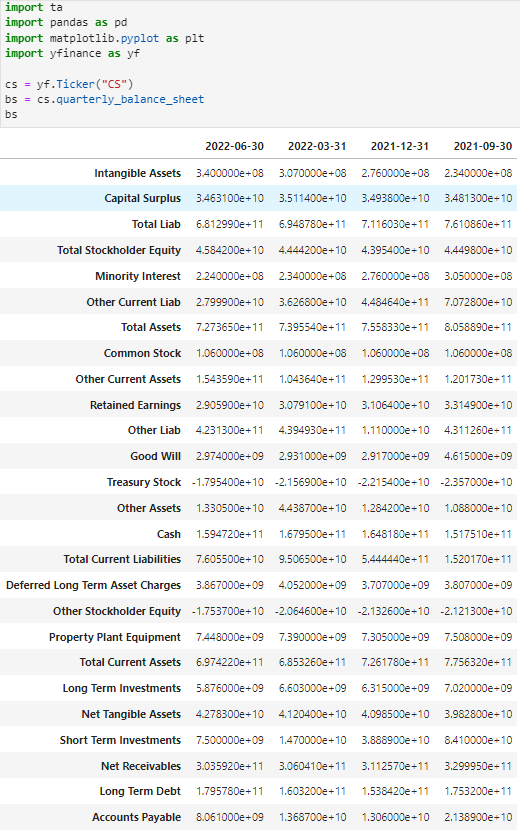
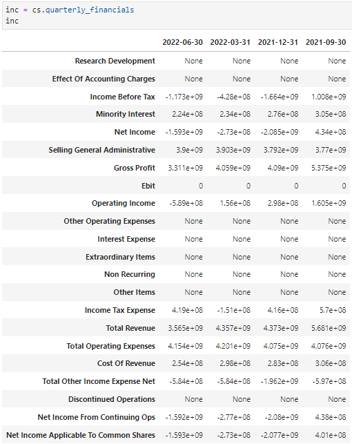
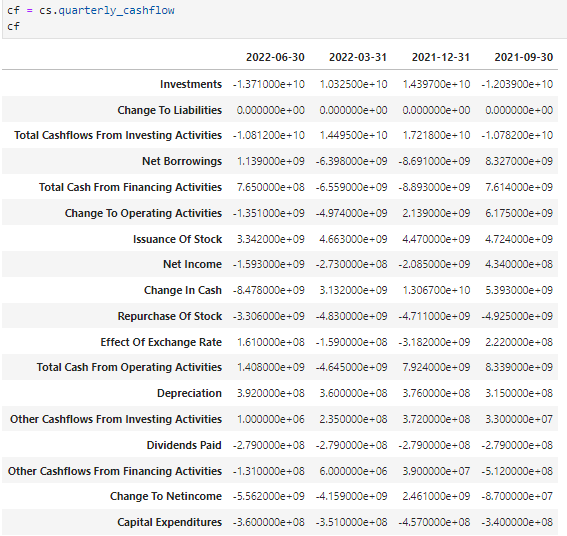
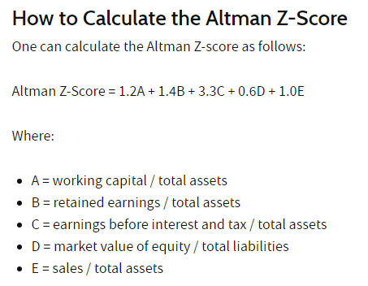
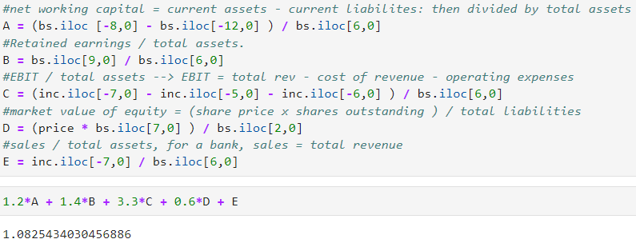

Let's use Credit Suisse as an interesting example because of the recent surging in the price of their Credit Default Swap (CDS) rates.
Pulling their most recent quarter's financial statements from Yahoo Finance: (Balance sheet, income statement, cash flow statement)
  And using this formula:
Plugging the numbers in gives us a Z-Score of 1.08:
A Z-Score of less than 1.8 means that the company is headed for bankruptcy. However, I would like to see how the score would change had the formula incorporated anything to do with leverage or Credit Suisse's liquidity coverage ratio, which is at 191% - well above the 100% regulatory minimum.